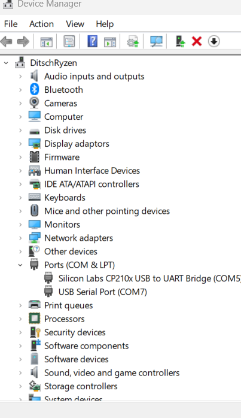

Installation
Guide microcontroller setup develop
Install VS code
Windows: just download the installer Linux: sudo snap install –classic code # or code-insiders
- Install Extension PlatformIO <https://platformio.org/>_
Open the Extension Manager on the left side bar. Search for PlatformIO and install. A restart of the window will be required.
Open Project Folder containing platformio.ini
This assures that PlatformIO is recognizing the Projectstructure. If it is loaded correctly, it should open up the PlatformIO Home Page along with the loaded platformio.ini
{kind=link}
{kind=link}
Debugging with PlatformIO and ESP-Prog
currently the debugger is not reliable stopping at custom breakpoints. It does stop after every iteration of the loop function.
Verfiy voltage is set to 3.3V on the PCB via both jumpers
Verify wiring
GPIO12 — TDI
GPIO15 — TDO
GPIO13 — TCK
GPIO14 — TMS
GND — GND
- Validating the COM Ports in the device manager
- 
update platformio.ini .. code:
debug_tool = esp-prog monitor_port = COM5 upload_port = COM5
{kind=link}
{kind=link}
The debugger can be preconfigured to disable the inital breakpoint
debug_init_break = ;
run PIO Debug via launch tab in vs-code
select Run and Debug in left sidepane.
compile and upload the current code in debug mode.
after the debugger is connected (takes some time ~1min), an extra navbar appears.
add variables to the watch-list to keep track
{kind=link}
{kind=link}
Troubleshooting
The ESP - Prog contains a JTAG Debug Interface and an FTDI Programming Interface. Only one of these Devices can be used at once. If the ESP-Prog is not detecting the Board and is showing a error msg FTDI Device ID xxxx not found … etc a driver problem is most likley causing the issue. This can be validated via the Device Manager in Windows.
{kind=link}
{kind=link}
{kind=link}
{kind=link}